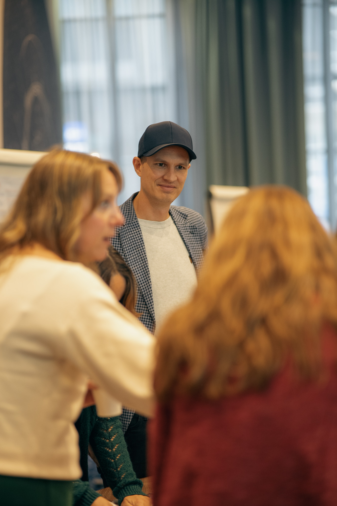

Evidence first
We find out what's actually happening before a single session is designed.
Every engagement begins with intelligence, not assumptions. The risk of moving straight to workshops is that the work lands on instinct rather than evidence. We remove that risk: an AI-assisted diagnostic and deep, confidential listening that discover the real pulse of your team, at every level and across its stakeholder ecosystem, before a single session is designed.
Bespoke, confidential listening across your entire stakeholder ecosystem, in-depth interviews and a structured, AI-assisted diagnostic, anchored to your own language. We discover the real pulse of your team, every conversation thematic, and never attributed.
We surface what's actually happening across the stakeholder ecosystem, the patterns that are obvious from the outside and invisible from within. You get it first: a structured findings report, a stakeholder perception map and a communication blueprint, the evidence and language to move with precision.
We turn the findings report into an action plan and help you run it, capability uplift, tailored workshops, high-performance coaching for your team and project management. The report doesn't gather dust. We pick it up and run with it.
We find out what's actually happening before a single session is designed.
People tell us things they won't put in a survey or say in front of their own leadership. That's the whole point. The value isn't in asking. It's in what we get back, and what we then do with it.
No individual comment is ever attributed, in the synthesis or the debrief. People know that going in, so they're honest in a way they're never honest on a form.
We interview in each person's preferred language, in their own terms. The friction points and unspoken assumptions surface because we're listening for them, not scoring a questionnaire.
AI-assisted synthesis reads across every conversation, so the patterns that are obvious from the outside and invisible from within surface fast. You don't get a pile of quotes. You get the read, and the language to act on it.

By the time the truth reaches your desk, you're seeing about 15% of it. We go and get the other 85.
You can't lead what you can't see. So we map both halves of the picture: how the team works on the inside, and how it's read on the outside.

Where decisions really live. The distance between what's said at the top and what's understood at the front line. The assumptions about what the leader values that no one says out loud. The dynamics holding the team back, named.
How the people whose support you need most actually see you, across the whole stakeholder ecosystem. Where trust can be built fastest, where friction lives, and the specific moves that shift each relationship that matters.
Book a 15-minute conversation. We'll show you what an AI-assisted diagnostic could discover about the pulse of your team, and the plan to act on it. No pitch, no obligation.